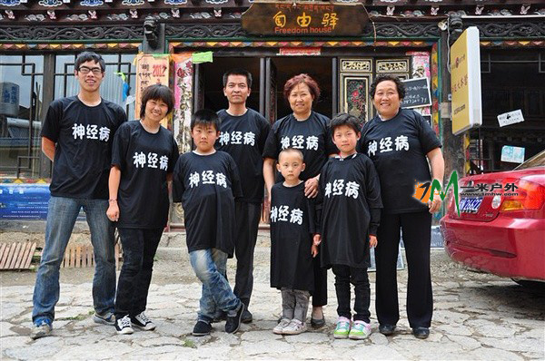
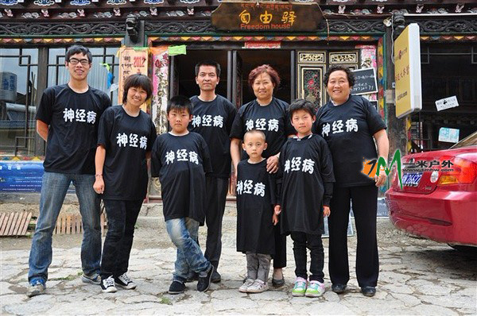

TOP

这一节让我给大家介绍下我们强悍而且充满神秘色彩的伟大向导，神经病。最近这几篇开头都写的有些压抑，相信也很让大家所不耻，特别是有些人看了会说我掉进 了蜜罐尝不出甜。我呢，是从小到大没受过什么苦，连爬座海拔250的小山都要和人家炫耀一下，比起同样是双鱼的病病要差很远了。

话不絮繁，进入正题。神经病，复姓神经，单名病，字淫荡，四川某地人士，生于群山之中。这个具体的地方呢，我也不知道，之所以没有向病病问起，也是想 保留下神秘感，而且我想就是问了他也不见得会告诉我，他还说以后要是犯了事儿被政府通缉要躲回去呢，相信是个连花旗国卫星都侦测不到的地方。
说此人很神秘不为过，作为一个称职的向导，他却连手机也没有。但是在我们出发前一天晚上，我和小岛想起什么事要找他商量一下，三分钟之后他就 出现在平措221寝室，之前也没有什么约定。我想，虽然他一直看起来吊儿郎当的，但不能说他对带队的事没有用心考虑过。一路上经历了很多事情，例如新成员 的加入，队伍的规模扩大又缩小，向导费用的事他也让步了许多，但我想他心里基本也没谱，也许索大人说中了，我们的队伍没有专业的向导，但我只看到了一个对 自己的利益很不专业的向导，仅此而已。他在路上还是很尽心照顾我们，特别是我和小岛。有的人会说，既然是服务行业，收了钱就应该付出相应的回报，但我想这 年头一个人能干好自己的本职工作，不对自己的得失斤斤计较，已经很不容易了，况且还是真心的回报。
刚见到他时，是在八廓街的藏饰店里，反穿着一件破T恤，牛仔裤的裤腿胡乱挽着，脸上有些稀疏的胡碴子，大大咧咧自己抄了把凳子坐下。他一开始 没有特意拉拢我们跟他走，只是对于小岛提出的路上需要注意的问题，细细的说明了一下，例如哪里有什么岔路，路上小溪里面的青苔，蚂蟥区要怎么穿，塌方区会 不会有危险。小岛很专业很认真的用本子记着，我呢什么也没带，坐在那里直冒冷汗心里有些发虚，本来想着走墨脱是捡个便宜，谁知道听起来比爬启孜峰还难。这 时候我们还不相熟，他的表情也略有点严肃，我当时还想他有多大呢？他说他走过那么多地方，讨过饭当过和尚越过境，怎么也得30出头吧？无奈这张脸实在看不 出年龄。后来大家一起走，在八一镇的渡口青旅查身份证时他也被曝光，想象不到他比小岛还小。这里一点没有瞧不起他的意思，毕竟古人都说读万卷书不如行万里 路，他的经历如果写成一本书应该会很畅销。认识了他之后我更觉得来拉萨真好，虽然自己没有亲自经历过，但也见证了人可以有另一种生活，不用受世俗的约束也 不用在意别人的目光，同样可以活得精彩，而且这样的野驴在西部还不知道有多少。
没出发之前的那两天里他总是逗我和小岛开心，在拉萨他似乎和每一个街边的小贩都很熟，人家也对他直呼病哥。有一次在一位大婶那买下一些橘子， 然后就蹲在人家旁边开始半价叫卖。或者见到一个过路的老外，虽然不懂多少英语也敢和人家乱侃，英汉藏夹在一起。即使有时候不小心玩笑开得过头冒犯了别人， 也很快就可以化解矛盾，而且自己也不往心里去。见了美女更是亲切得不得了，上去就和人家勾肩搭背，在我们寝室也一个都不放过，也会顺便拉着人家一起走墨 脱，虽然都没成功。第二天病病带我和另一个北京的哥们在平措大食堂吃了顿好饭，虽然叫做平措大食堂，但离平措还是挺远，而且位置比较隐密又没有招牌，一般 来旅游的人还找不到。他居然又要请我们，当然被我一口回绝了。在拉萨组队的这两天已经过得非常愉快，感觉接触的人收获的快乐比起在大连一年还要多，人会自 己找乐是很不容易的一件事，而同时又能用这些乐趣去感染身边的人，那更是很有本事，而病病就是这种人。
初次见到病病他反穿的那件T恤，据说是很有来历的。此件看起来几乎从没洗过的衣服正面上书“神经病”三个大字，后背是“淫荡的一天又开始 了”。之所以反穿也由于那几天正临国庆，拉萨街上密密麻麻的都是武警，而其人又曾经因为穿着这件T恤在公共场合睡觉被塞进政府招待所，所以要提防一下。毕 竟如果因有碍拉萨国庆节市貌做不成生意对谁都不好。
神经病国际大集团
这一节让我给大家介绍下我们强悍而且充满神秘色彩的伟大向导，神经病。最近这几篇开头都写的有些压抑，相信也很让大家所不耻，特别是有些人看了会说我掉进 了蜜罐尝不出甜。我呢，是从小到大没受过什么苦，连爬座海拔250的小山都要和人家炫耀一下，比起同样是双鱼的病病要差很远了。

话不絮繁，进入正题。神经病，复姓神经，单名病，字淫荡，四川某地人士，生于群山之中。这个具体的地方呢，我也不知道，之所以没有向病病问起，也是想 保留下神秘感，而且我想就是问了他也不见得会告诉我，他还说以后要是犯了事儿被政府通缉要躲回去呢，相信是个连花旗国卫星都侦测不到的地方。
说此人很神秘不为过，作为一个称职的向导，他却连手机也没有。但是在我们出发前一天晚上，我和小岛想起什么事要找他商量一下，三分钟之后他就 出现在平措221寝室，之前也没有什么约定。我想，虽然他一直看起来吊儿郎当的，但不能说他对带队的事没有用心考虑过。一路上经历了很多事情，例如新成员 的加入，队伍的规模扩大又缩小，向导费用的事他也让步了许多，但我想他心里基本也没谱，也许索大人说中了，我们的队伍没有专业的向导，但我只看到了一个对 自己的利益很不专业的向导，仅此而已。他在路上还是很尽心照顾我们，特别是我和小岛。有的人会说，既然是服务行业，收了钱就应该付出相应的回报，但我想这 年头一个人能干好自己的本职工作，不对自己的得失斤斤计较，已经很不容易了，况且还是真心的回报。
刚见到他时，是在八廓街的藏饰店里，反穿着一件破T恤，牛仔裤的裤腿胡乱挽着，脸上有些稀疏的胡碴子，大大咧咧自己抄了把凳子坐下。他一开始 没有特意拉拢我们跟他走，只是对于小岛提出的路上需要注意的问题，细细的说明了一下，例如哪里有什么岔路，路上小溪里面的青苔，蚂蟥区要怎么穿，塌方区会 不会有危险。小岛很专业很认真的用本子记着，我呢什么也没带，坐在那里直冒冷汗心里有些发虚，本来想着走墨脱是捡个便宜，谁知道听起来比爬启孜峰还难。这 时候我们还不相熟，他的表情也略有点严肃，我当时还想他有多大呢？他说他走过那么多地方，讨过饭当过和尚越过境，怎么也得30出头吧？无奈这张脸实在看不 出年龄。后来大家一起走，在八一镇的渡口青旅查身份证时他也被曝光，想象不到他比小岛还小。这里一点没有瞧不起他的意思，毕竟古人都说读万卷书不如行万里 路，他的经历如果写成一本书应该会很畅销。认识了他之后我更觉得来拉萨真好，虽然自己没有亲自经历过，但也见证了人可以有另一种生活，不用受世俗的约束也 不用在意别人的目光，同样可以活得精彩，而且这样的野驴在西部还不知道有多少。
没出发之前的那两天里他总是逗我和小岛开心，在拉萨他似乎和每一个街边的小贩都很熟，人家也对他直呼病哥。有一次在一位大婶那买下一些橘子， 然后就蹲在人家旁边开始半价叫卖。或者见到一个过路的老外，虽然不懂多少英语也敢和人家乱侃，英汉藏夹在一起。即使有时候不小心玩笑开得过头冒犯了别人， 也很快就可以化解矛盾，而且自己也不往心里去。见了美女更是亲切得不得了，上去就和人家勾肩搭背，在我们寝室也一个都不放过，也会顺便拉着人家一起走墨 脱，虽然都没成功。第二天病病带我和另一个北京的哥们在平措大食堂吃了顿好饭，虽然叫做平措大食堂，但离平措还是挺远，而且位置比较隐密又没有招牌，一般 来旅游的人还找不到。他居然又要请我们，当然被我一口回绝了。在拉萨组队的这两天已经过得非常愉快，感觉接触的人收获的快乐比起在大连一年还要多，人会自 己找乐是很不容易的一件事，而同时又能用这些乐趣去感染身边的人，那更是很有本事，而病病就是这种人。
初次见到病病他反穿的那件T恤，据说是很有来历的。此件看起来几乎从没洗过的衣服正面上书“神经病”三个大字，后背是“淫荡的一天又开始 了”。之所以反穿也由于那几天正临国庆，拉萨街上密密麻麻的都是武警，而其人又曾经因为穿着这件T恤在公共场合睡觉被塞进政府招待所，所以要提防一下。毕 竟如果因有碍拉萨国庆节市貌做不成生意对谁都不好。